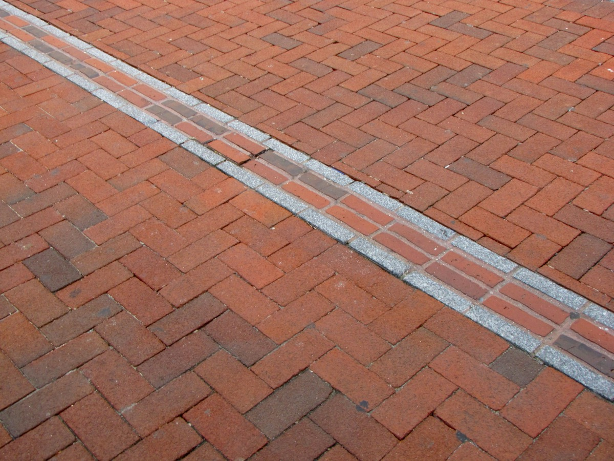
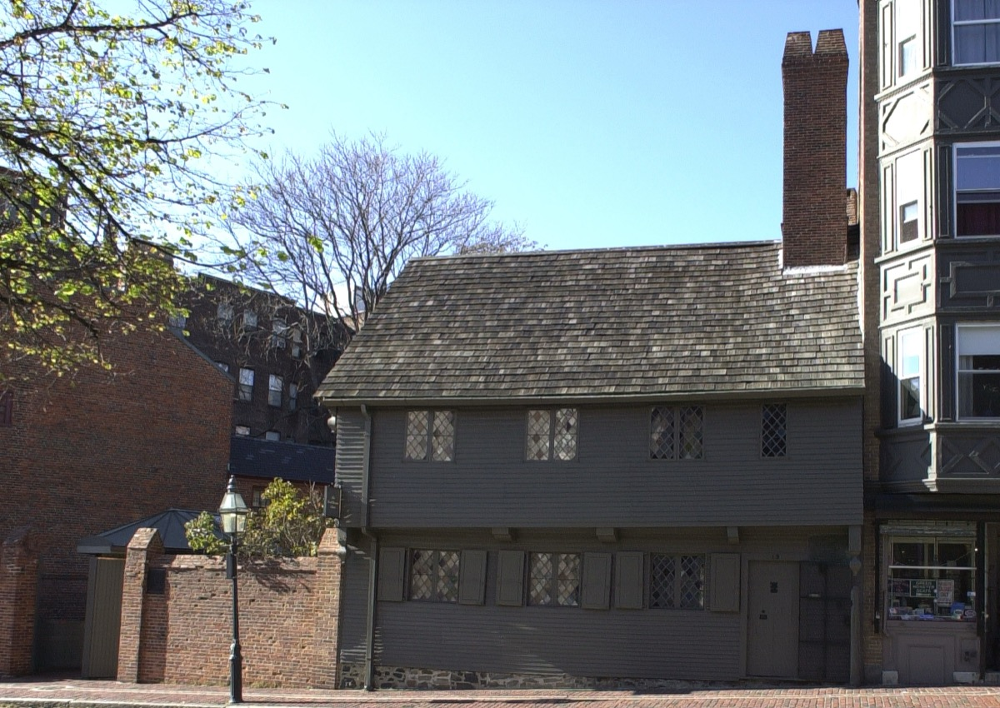
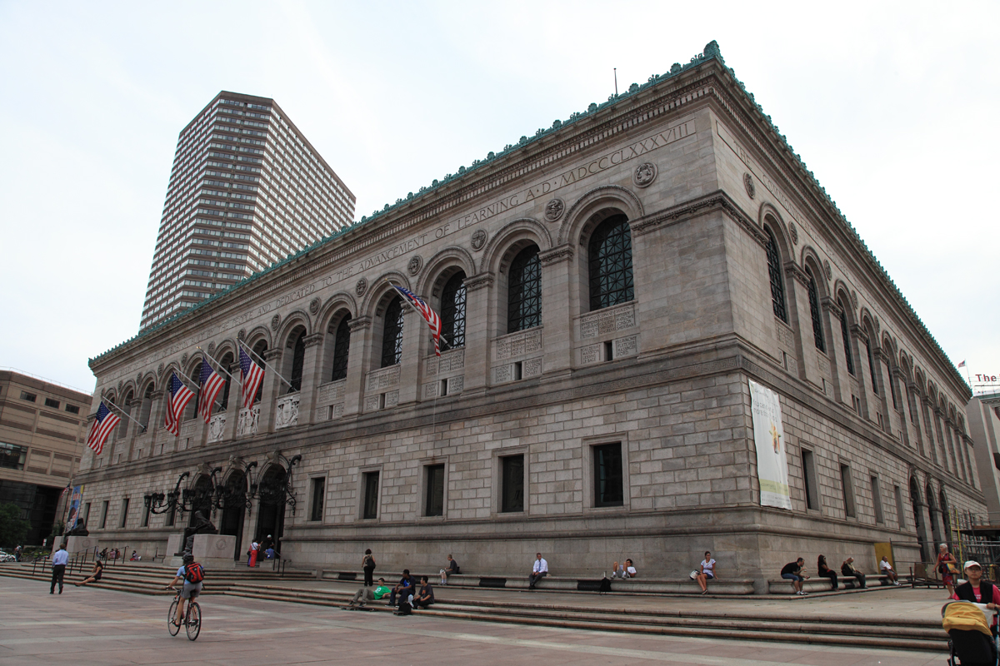
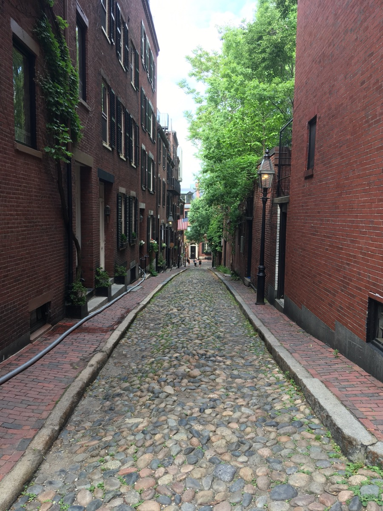
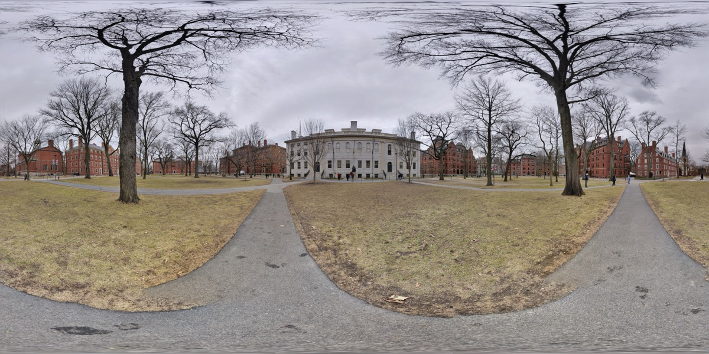
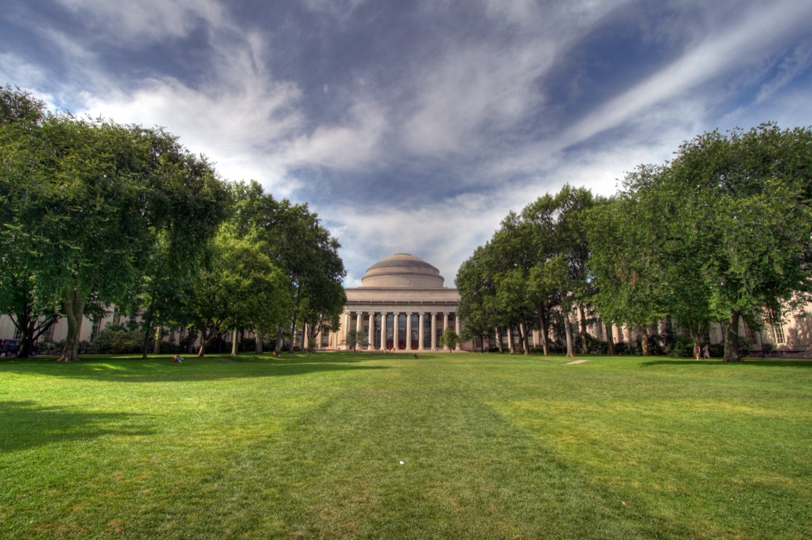
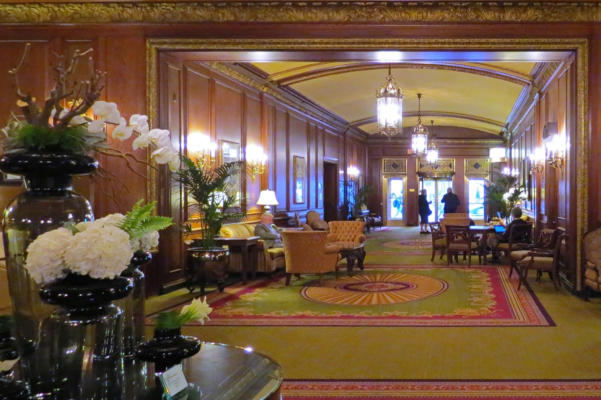

Three days covers the historic core, Back Bay and Cambridge, all on foot or the T. Each day has an hour-by-hour table, then the key stops. Only have a weekend? Use the Boston weekend itinerary.
The short answer
3 days in Boston at a glance
- Day 1 morning: Freedom Trail
- Day 1 afternoon: North End
- Day 1 evening: Harborwalk, Hanover Street dinner
- Day 2 morning: Copley Square, Newbury Street
- Day 2 midday: Public Garden, Beacon Hill
- Day 2 afternoon: MFA or Gardner
- Day 2 evening: Esplanade sunset, Fenway
- Day 3 morning: Harvard
- Day 3 midday: MIT and the Charles
- Day 3 afternoon: Seaport, or Salem
01
Day 1: Freedom Trail, North End and the Harborwalk
About five miles of flat walking. Start early: the trail is quiet before 10am and packed after noon.
| Time | Activity | Location | Cost |
|---|---|---|---|
| 8:30am | Coffee and a pastry, pick up a trail map | Boston Common Visitor Center, 139 Tremont St | $5–8 |
| 9:00am | Freedom Trail, first half: State House, Granary Burying Ground, King's Chapel, Old South Meeting House, Old State House | Beacon Hill and Downtown | Free outside; $15 for Old South and Old State House |
| 11:00am | Faneuil Hall and Quincy Market; quick look, not lunch | 4 S Market St | Free |
| 11:45am | Early lunch before the line forms | Galleria Umberto, 289 Hanover St, or Regina Pizzeria, 11½ Thacher St | $8–20 |
| 12:45pm | Paul Revere House, Old North Church, Copp's Hill Burying Ground | North End | About $6 and $10 |
| 2:15pm | Cross the bridge to Charlestown: USS Constitution and Bunker Hill Monument | Charlestown Navy Yard | Free |
| 4:00pm | Ferry back from the Navy Yard to Long Wharf | MBTA F4 ferry | About $3.70 |
| 4:30pm | Harborwalk south past the Aquarium to Rowes Wharf, then back to Christopher Columbus Park for dusk | Waterfront | Free |
| 6:30pm | Cannoli and an espresso standing up | Modern Pastry, 257 Hanover St | $5–8 |
| 7:30pm | Dinner in the North End | Hanover St and the side streets | $30–80 per person |
The Freedom Trail

Follow the red brick line from the Common to Bunker Hill. Every stop is in our Freedom Trail guide.
The North End: Paul Revere House, Old North Church, Copp's Hill

Revere's 1680 house, the church where the two lanterns hung, and the burying ground with the best view to the Navy Yard. More in the North End guide.
The Harborwalk from Long Wharf to Rowes Wharf

Ferry back for the skyline, walk south past the Aquarium seals to Rowes Wharf, then catch last light at Christopher Columbus Park. One of the best views in Boston.
02
Day 2: Back Bay, Beacon Hill, the Public Garden and a museum
A slower day with less mileage and the best sunset in the city. Book Red Sox tickets now if they are home.
| Time | Activity | Location | Cost |
|---|---|---|---|
| 9:00am | Breakfast in Back Bay | Tatte, 399 Boylston St, or Flour, 131 Clarendon St | $10–18 |
| 10:00am | Boston Public Library: Bates Hall, the courtyard, the Sargent murals | 700 Boylston St | Free |
| 10:45am | Copley Square and Trinity Church, then Newbury Street west to east | Back Bay | Free; Trinity about $10 |
| 12:00pm | Public Garden: Swan Boats (April–September) and the ducklings | 4 Charles St | Swan Boats about $4.50 |
| 12:45pm | Lunch on Charles Street | Beacon Hill | $15–30 |
| 1:45pm | Beacon Hill: Acorn St, Louisburg Square, the State House steps, the Black Heritage Trail | Beacon Hill | Free |
| 3:00pm | Green Line E to the Museum of Fine Arts, or the Gardner | 465 Huntington Ave · 25 Evans Way | About $27 · about $22 |
| 5:45pm | Walk or ride to the Esplanade for sunset from the Hatch Shell dock | Charles River Esplanade | Free |
| 7:00pm | Red Sox game, or dinner in the South End or Back Bay | Fenway Park, 4 Jersey St | Game from about $30; dinner $40–90 |
Boston Public Library, Copley Square and Newbury Street

Bates Hall, the Sargent Gallery, then the courtyard café. Trinity Church is across the square and Newbury Street runs eight blocks west. More in the Back Bay guide.
The Public Garden and Beacon Hill

Swan Boats and the Make Way for Ducklings bronzes, then Acorn Street, Louisburg Square and the Black Heritage Trail. Lunch options in the Beacon Hill guide.
Museum of Fine Arts, or the Isabella Stewart Gardner Museum

Pick one. The MFA needs three hours; the Gardner is a Venetian palace done in ninety minutes. Both are in the best museums in Boston.
Sunset on the Charles River Esplanade

The dock beside the Hatch Shell faces west down the river. Arrive thirty minutes before sunset.
03
Day 3: Cambridge and the Seaport, or a half-day in Salem or the Harbor Islands
Option A is all on the Red Line and works in any weather. Option B is a half-day out, then an easy evening.
Option A: Cambridge in the morning, Seaport in the afternoon
| Time | Activity | Location | Cost |
|---|---|---|---|
| 9:00am | Red Line to Harvard; breakfast in the Square | Harvard Square | $10–15 |
| 9:45am | Harvard Yard, Widener steps, Memorial Hall | Harvard Yard, Massachusetts Ave | Free |
| 10:45am | Harvard Art Museums, or the Museum of Natural History for the glass flowers | 32 Quincy St · 26 Oxford St | Free · about $15 |
| 12:15pm | Lunch in Harvard Square | Mr. Bartley's, 1246 Mass Ave, or Felipe's, 21 Brattle St | $12–25 |
| 1:15pm | Red Line to Kendall/MIT; walk the campus past the Stata Center to the Great Dome | MIT, 77 Massachusetts Ave | Free |
| 2:15pm | Walk the Longfellow Bridge back to Boston, or kayak on the Charles from Kendall (May–October) | Longfellow Bridge · 15 Broad Canal Way | Free · from about $20 per hour |
| 3:30pm | Red Line to South Station, walk into the Seaport; ICA and the Harbor Shore Drive waterfront | 25 Harbor Shore Dr | ICA about $20; free Thursdays 5–9pm |
| 6:00pm | Drinks on a Seaport patio, then dinner in Fort Point | Row 34, 383 Congress St | $40–90 |
Option B: Salem or the Harbor Islands, then an easy evening
| Time | Activity | Location | Cost |
|---|---|---|---|
| 9:00am | Salem: commuter rail from North Station, 30 min · Islands: ferry from Long Wharf (May–October) | North Station · Long Wharf | About $8 each way · about $25 round trip |
| 10:00am | Salem: Peabody Essex Museum, Witch Trials Memorial, Derby Street · Islands: Spectacle Island beach and trails, or Fort Warren on Georges | Salem · Boston Harbor | PEM about $20 · islands free |
| 3:00pm | Back to Boston by train or ferry; a beer at the Bell in Hand | 45 Union St | $8–10 |
| 6:30pm | Farewell dinner: Chinatown, the South End, or one more North End table | Your choice | $30–90 |
Harvard Yard and the Harvard Art Museums

Johnston Gate, the John Harvard statue, the Widener steps, then the free Art Museums next door. Lunch ideas in the Harvard Square guide.
MIT and the Charles River

The Great Dome over Killian Court has the best straight-on skyline view. Kayak from Broad Canal or walk the Longfellow Bridge back.
The Seaport and the ICA

Ninety minutes for the ICA and its glass gallery over the water. Fort Point has the better restaurants: Row 34 for oysters, Drink for cocktails. More in the Seaport guide.
Salem, by commuter rail or ferry
The Peabody Essex Museum, then Derby Street to the House of the Seven Gables. Skip the wax museums and October crowds. Full plan in the Salem day-trip guide.
04
Where to stay for this itinerary
Downtown or the North End edge puts day one on foot. Back Bay is nicer at night.
Downtown and the waterfront: best for day one

The Parker House is on the trail, the Bostonian faces Faneuil Hall, the Harbor Hotel is the splurge. Cheaper: HI Boston hostel (19 Stuart St) or citizenM (70 Causeway St).
Back Bay: best for the whole trip
Ten minutes on foot to the library, Newbury Street, the Garden and the Esplanade. Full options in where to stay in Boston.
05
How much 3 days in Boston costs
Per person, per day, excluding flights. Where you sleep is the biggest lever.
| Line | Budget | Mid-range | High-end |
|---|---|---|---|
| Accommodation (per person, shared room) | $50–80 hostel dorm or private | $150–250 (half of a $300–500 room) | $350+ (half of a $700+ room) |
| Food and drink | $35–50: pastry, slice, counter lunch, one sit-down dinner | $90–130: café breakfast, lunch out, dinner with a drink | $200+: tasting menus, oysters, cocktails |
| Transit | $8 (7-day pass is $22.50 for the trip) | $8 | $8–40 (some rides by taxi) |
| Attractions | $10: mostly free sites, one paid church | $40–60: one museum, Fenway tour or ICA, Old North | $100–200: game tickets, harbor cruise, museum, Salem |
| Per day | About $110–150 | About $300–450 | About $650+ |
| 3 days total | About $350–450 | About $900–1,350 | About $2,000+ |
Free wins: Harvard Art Museums, ICA Thursday evenings, USS Constitution, the library, the Esplanade. See Boston on a budget and the best cheap eats.
06
Variations: with kids, in the rain, in winter, for sports fans
- With kids: USS Constitution, Swan Boats, Museum of Science (1 Science Park), then the Children's Museum (308 Congress St) and Aquarium (1 Central Wharf) instead of Cambridge. See Boston with kids.
- Rain: move the museum to the wet day, add the library, Quincy Market or the Aquarium, and swap the Esplanade for a film at the Coolidge or Brattle. See the rainy-day guide.
- Winter: start the trail at 10am, skate the Frog Pond (rentals about $15), and make day three Cambridge plus the Seaport. Swan Boats, ferries and kayaks do not run. More in Boston in winter.
- Sports fans: a Red Sox game fits day two. Bruins and Celtics play at TD Garden (100 Legends Way), ten minutes from the North End, October to April.
07
Getting around and before you go
- Green Line for Back Bay, museums and Fenway; Red for Cambridge; Blue for the Aquarium and airport.
- A ride is $2.40 by CharlieCard or contactless card; a 7-day pass is $22.50. Trains run about 5am to 12:30am.
- From Logan, the Silver Line SL1 to South Station is free; taxis run $25 to $40. Details in getting around Boston.
- Book ahead for Red Sox tickets, Fenway tours and North End dinners. Many North End spots are cash-only; tip 18 to 20 percent.
- The MFA and Gardner close Tuesdays; the USS Constitution closes Monday and Tuesday most of the year.
- Best months: late April to June and September to October. First visit? Read the first-time visitor guide and the Boston bucket list.
FAQ
Boston itinerary for 3 days: common questions
Is 3 days enough for Boston?
Yes. Three days covers the Freedom Trail, North End, Back Bay, Beacon Hill, one museum, the waterfront and a half-day in Cambridge. Add a fourth day only for Cape Cod or the Harbor Islands.
What is the best order to see Boston in 3 days?
Freedom Trail and North End on day one. Back Bay, Beacon Hill and a museum on day two. Cambridge, the Seaport or a day trip on day three.
Do I need a car for 3 days in Boston?
No. Every stop is walkable or on the T, and central parking runs $40 to $60 a day. Salem works by commuter rail or ferry. Rent a car only for Cape Cod or the Berkshires.
How much does 3 days in Boston cost?
Excluding flights, about $150 a day on a hostel budget, $350 to $450 mid-range, and $700 or more high-end. A 7-day T pass covers all transit for $22.50.
What is the best area to stay for a 3-day Boston itinerary?
Downtown or the edge of the North End puts you at the start of the Freedom Trail. Back Bay is quieter, closer to the museums, and one short Green Line ride from everything else.